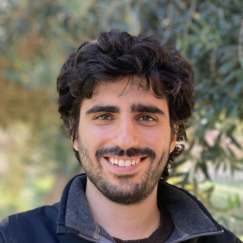
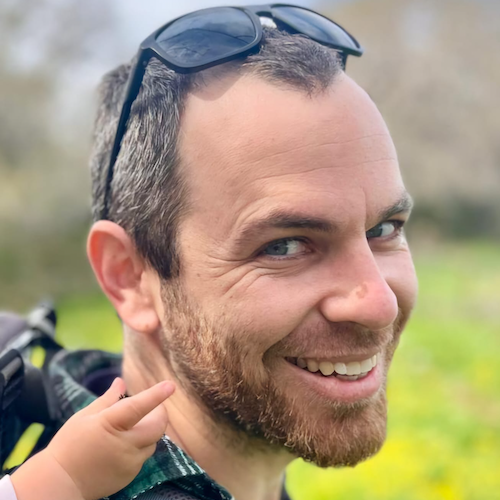
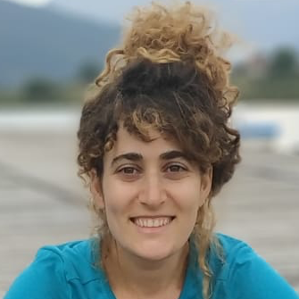
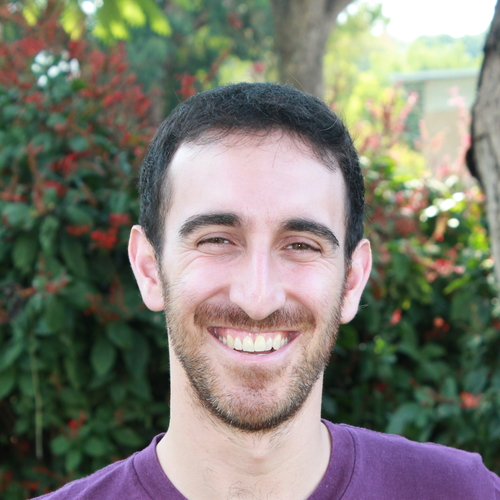
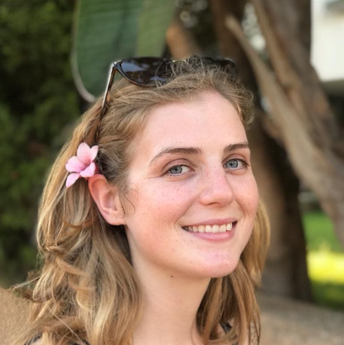
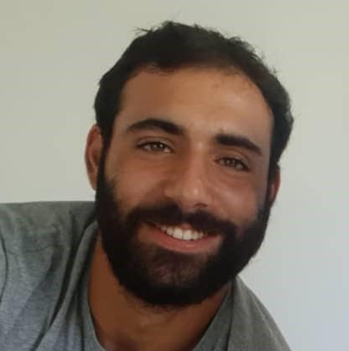
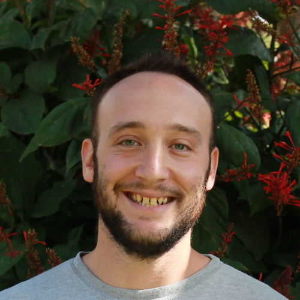
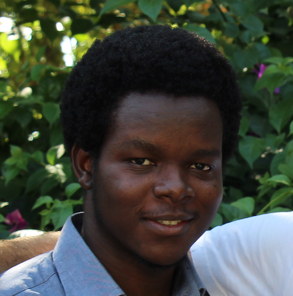
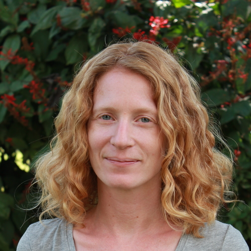

Group
Yair Mau
Principal Investigator
Problems worthy of attack prove their worth by fighting back.
— Piet Hein
Erez Feuer
PhD student
plant responses to drought and heatwaves

Oded Hollander
MSc student
Plant-plant interactions in a consumer-resource framework
Co-advisor: Niv DeMalach
Dolev Arav
MSc student
Urban tree resilience across the globe
Co-advisor: Yakir Preisler
Michael Ruggill
MSc student
Urban tree monitoring and early-warning stress indices
Co-advisor: Yakir Preisler

Former members

Nurit Goldberg
2020–2024, PhD student
soil compaction, soil salinization

Isaac Kramer
2018–2022, PhD student
soil salinization, irreversible soil degradation processes, sustainable resource use
website

Laura Rez
2020–2022, MSc student
plant water fluxes, heatwave impact on fruit trees

Yuval Bayer
2020–2022, BSc Amirim project
Optimal stomatal control

Avi Gross
2018–2020, MSc student
Plant water storage dynamics

Taiwo Adeyemo
2018–2020, MSc student
Irreversible soil degradation

Avigail Kaner
2017–2021, Research Specialist
— Unknown